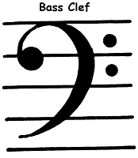

Staff, also spelled stave, in the notation of Western music, five parallel horizontal lines that, with a clef, indicate the pitch of musical notes.Which contains 5 lines and four spaces
The treble clef is a tool musicians use to notate pitches above middle C on the piano. The treble clef is also known as G clef because it describes the location of G, specifically the G above middle C, or G4. We learn treble clef so we know how to read sheet music faster and easier.
The bass clef is shaped like an ornamental letter F, accompanied by two dots that bracket the music note F3, which is the first F below middle C. For this reason, it is nicknamed the F clef. The bass clef is the most common clef for double bass, bass guitar, trombone, and timpani.
Semibrave are worth four beats. That means we count to four when playing it. This part of the note is called the note head.
Minim are worth two beats,half as long as a semibrave.They have a stem coming out of their note head.
Crotechets are worth one beat,half as long as minum.They are very similar to minums but have their note heads filled in black.
Quavers are worth 1/2 a beat, half as long as a crotechet but have a tail(or hook) coming out of their stem.
Semiquavers are worth 1/4 of a beat,half as long as a quaver.They are similar to quavers but have a second tail(or hook) coming out of their stem